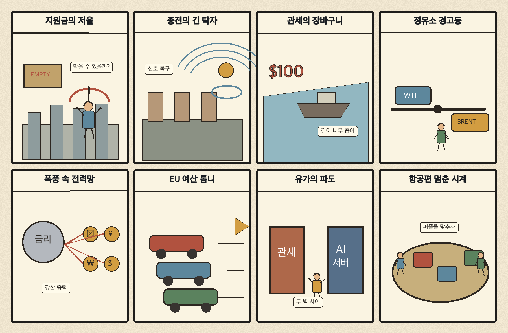
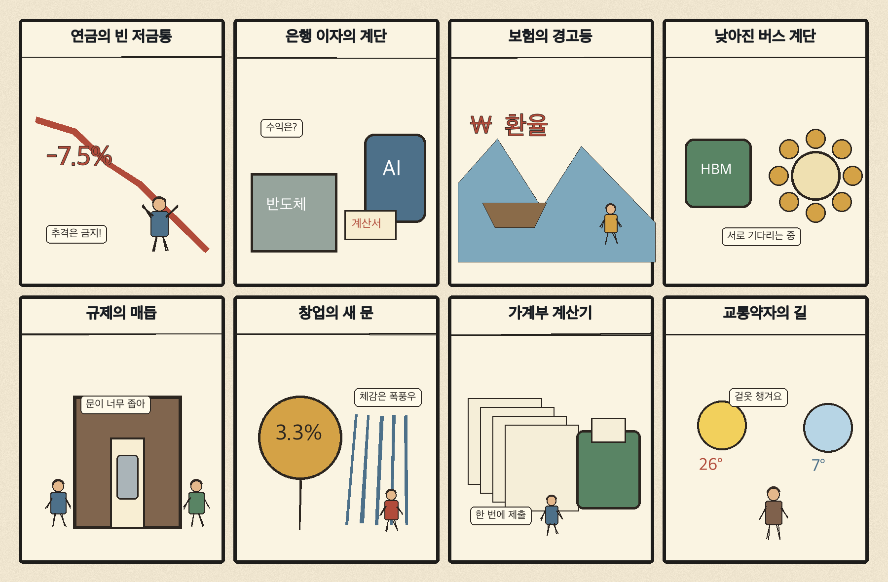

01
오라클 · 109.50→103.88달러 · -5.13%
내용요약 AI 인프라 투자비와 수익성 우려 속 전일 종가 대비 5.13% 하락했습니다.
예상여파 데이터센터 투자 부담이 부각되면 국내 전력·장비 공급망도 단기 변동성이 커질 수 있습니다.
MORNING_BRIEFING_20261127
작성 시각: 2026-11-27 06:35 KST · 직전 미국 정규장과 2026-11-27 KST 당일 공개 기사 기준
미국 증시는 11월 26일 추수감사절로 휴장했습니다. 따라서 직전 정규장인 11월 25일 종가를 기준으로 보면 다우 +0.33%, S&P 500 -0.25%, 나스닥 -0.62%의 혼조 흐름입니다. 오늘 한국 증시는 새로운 미국 종가 신호보다 전날 KOSPI의 장중 반등 지속성, 반도체 수급, 미국 관세와 중동 유가 뉴스에 더 민감하게 반응할 가능성이 큽니다.
| 지수 | 종가 | 등락률 | 한국 증시 시사점 |
|---|---|---|---|
| 다우존스 | 50,182.95 | +0.33% | 경기민감주 지지 |
| S&P 500 | 7,182.78 | -0.25% | 대형주 약보합 |
| 나스닥 종합 | 23,585.80 | -0.62% | AI 투자 불안 지속 |
추수감사절로 새 종가 신호가 없어 국내 수급이 중요합니다.
전날 4,711.21로 소폭 반등했지만 장중에는 밀렸습니다.
엔비디아 칩 고객 실소유주 검증이 강화될 수 있습니다.
사우디 정유시설 피격으로 에너지 원가 경계가 이어집니다.
11월 26일 보고서는 전일 KOSPI 급락과 금통위·관세·유가 변수가 겹쳐 공식 추천을 내지 않았습니다. 사후 가격을 보고 추천 기록을 추가하지 않습니다.
| 시장 | 종가 | 등락률 | 기준 |
|---|---|---|---|
| KOSPI | 4,711.21 | +0.29% | 11월 26일 · 시가 대비 -0.71% |
| KOSDAQ | 655.71 | +0.78% | 11월 26일 · 시가 대비 -0.42% |
| 다우존스 | 50,182.95 | +0.33% | 미국 11월 25일 정규장 |
| S&P 500 | 7,182.78 | -0.25% | 미국 11월 25일 정규장 |
| 나스닥 종합 | 23,585.80 | -0.62% | 미국 11월 25일 정규장 |
국내 은행권 누적 이자이익 확대와 금리 환경이 수익성을 지지합니다.
중동 정유시설 피격과 공급 차질 우려가 유가를 지지합니다.
미국의 대중 수출통제와 고객 실소유주 검증 강화가 부담입니다.
유가·운임 상승 시 비용 민감 업종의 마진 압박이 커질 수 있습니다.
내용요약 AI 인프라 투자비와 수익성 우려 속 전일 종가 대비 5.13% 하락했습니다.
예상여파 데이터센터 투자 부담이 부각되면 국내 전력·장비 공급망도 단기 변동성이 커질 수 있습니다.
내용요약 메모리 업황 기대보다 AI 투자 불안이 앞서며 전일 종가 대비 4.53% 하락했습니다.
예상여파 국내 메모리 대형주의 투자심리와 외국인 수급에 부담이 될 수 있습니다.
내용요약 신용등급 검토 보도와 AI 투자 경계 속 전일 종가 대비 3.91% 하락했습니다.
예상여파 HBM·첨단 패키징 공급망의 시가 변동성을 높이는 신호입니다.
내용요약 장중 기술주 반등을 주도하며 전일 종가 대비 3.40% 상승했습니다.
예상여파 플랫폼 광고와 AI 서비스 투자의 상대적 회복력을 보여줍니다.
내용요약 기업 IT서비스 수요 기대 속 전일 종가 대비 3.52% 상승했습니다.
예상여파 AI칩보다 실제 기업 도입·컨설팅 수요가 견조할 가능성을 시사합니다.
미국 휴장으로 해외 가격 신호가 비어 있어 오늘 장은 원화, 외국인 현·선물 수급, 반도체 대형주의 초반 방향이 중요합니다. 전날 KOSPI는 전일 대비 0.29% 올랐지만 시가 대비로는 하락해 매수세가 강하다고 단정하기 어렵습니다. 은행·정유는 금리와 유가의 수혜 관찰군이고, 반도체는 미국 수출통제 뉴스 때문에 시가 급등 추격을 피해야 합니다.
오늘은 추천 없음 — 현금 관망
미국장이 휴장해 새로운 종가 신호가 없고, 전날 KOSPI도 시가 대비 약세였습니다. 개장 전에는 종합점수 75점·상승확률 60%·예상 손익비 1.5와 30건 이상 보정 표본을 동시에 검증할 수 없습니다.
관심 연결종목 은행·정유·대형 반도체는 금리·유가·수출통제 흐름의 관찰 대상일 뿐 매수 추천이 아닙니다. 시가 급등 종목 추격매수를 금지합니다.
미국 휴장 뒤 국내 시장의 독자적인 위험선호를 확인합니다.
전날 종가 4,711.21 부근의 지지 여부를 봅니다.
중국계 고객 실소유주 검증 강화의 공급망 영향을 점검합니다.
사우디 정유시설 피격 뒤 공급 차질과 운임 반응을 살핍니다.
핵심 요약: AI칩 경쟁의 초점이 성능에서 고객 실소유주와 수출통제 준수로 이동하고 있습니다. 동시에 교량 안전점검과 시험 관리처럼 생활 현장 적용은 확대되고, 미국은 TSMC 공장으로 반도체 현지화를 밀어붙이고 있습니다.
내용요약 엔비디아 칩을 대량 구매한 실리콘밸리 업체 두 곳의 중국계 소유 구조가 드러났다는 보도입니다.
예상여파 첨단칩 수출통제의 실효성 논란이 커지며 판매사 실소유주 검증과 공급망 규제가 강화될 수 있습니다.
내용요약 서울시설공단이 교량 콘크리트 낙하 위험을 탐지하는 AI 장비를 개발했습니다.
예상여파 시설물 유지보수가 사후 복구에서 상시 예측점검으로 이동하며 공공 안전기술 도입이 빨라질 수 있습니다.
내용요약 국회 교육위원회가 AI를 활용한 시험 부정행위 방지 후속대책을 보고받습니다.
예상여파 시험장 통신·기기 통제와 감독 인력 투자가 늘고, 교육용 AI의 허용 범위도 더 구체화될 전망입니다.
내용요약 엔비디아 판매상이 중국에 지분·임대 관계가 조금이라도 있는 고객에는 칩을 팔지 않는 강경 방침을 제시했습니다.
예상여파 고객확인 절차가 강화되면서 AI칩 유통 속도와 중국 관련 데이터센터 조달에 제약이 커질 수 있습니다.
내용요약 트럼프 대통령이 다음 달 애리조나 TSMC 반도체공장 기공식에 참석할 예정입니다.
예상여파 미국 내 첨단 반도체 생산 확대와 보조금·관세를 결합한 공급망 현지화 압력이 이어질 가능성이 큽니다.
핵심 요약: 유럽의 우크라이나 지원 재정 협상과 종전 외교가 동시에 움직이는 가운데, 미국 관세발 물가 부담과 중동 에너지 공급위험이 시장 비용을 높이고 있습니다. 미국 폭풍은 전력망과 연휴 물류의 취약성도 드러냈습니다.
내용요약 유럽연합이 우크라이나 지원안과 차기 7년 예산을 놓고 회원국 간 격론을 벌이고 있습니다.
예상여파 재정 분담 합의가 지연되면 우크라이나 지원의 예측 가능성과 유럽 방산·재정정책에 불확실성이 커집니다.
내용요약 트럼프 대통령이 푸틴 대통령에게 유럽 침략 중단을 요구하며 종전 가능성을 언급했습니다.
예상여파 휴전 기대는 에너지와 방산 가격에 영향을 줄 수 있지만 실제 합의 조건과 이행 장치를 확인해야 합니다.
내용요약 미국 물가가 오른 상황에서 관세 확대가 소비자 부담을 더 키울 수 있다는 비판이 제기됐습니다.
예상여파 수입물가 상승은 미국 금리 인하 시점을 늦추고 교역국의 수출가격·환율 변동성을 높일 수 있습니다.
내용요약 사우디 정유시설 피격으로 사망자가 발생하고 시설 가동이 일시 중단됐습니다.
예상여파 중동 공급망 위험이 국제유가와 해상운임을 끌어올려 항공·화학·소비재 원가에 부담이 될 수 있습니다.
내용요약 미국 추수감사절 연휴에 폭풍이 덮쳐 30만 곳이 정전되고 항공편 수백 편이 결항됐습니다.
예상여파 연휴 소비와 물류 일정이 흔들리고 전력망 복원·기후 회복력 투자 필요성이 다시 부각될 수 있습니다.

핵심 요약: 국민연금 체납과 보험사 부실지표는 가계·취약차주의 부담을 보여주는 반면 은행 이자이익은 늘었습니다. 저상버스 확대와 창업 규제혁신은 공공서비스·신산업 개선의 실행력을 확인할 사안입니다.
내용요약 사업주가 원천징수한 국민연금 보험료를 체납하면서 13만 명의 수급권이 위협받고 있다는 보도입니다.
예상여파 체납 사업장 관리 강화와 근로자 권리 구제 논의가 커지고 영세 사업주의 비용 부담도 점검 대상이 됩니다.
내용요약 대출 증가와 금리 상승으로 은행권의 3분기 누적 이자이익이 48조원을 넘어섰습니다.
예상여파 은행 수익성은 개선되지만 가계·기업의 이자 부담과 상생금융 압력도 함께 높아질 수 있습니다.
내용요약 보험사 대출잔액은 줄었지만 연체율과 부실채권 비율은 상승했습니다.
예상여파 취약 차주 부실이 이어지면 보험사의 충당금 적립과 대출 심사가 강화될 가능성이 있습니다.
내용요약 전국 시내버스 두 대 중 한 대가 저상버스로 집계됐고 교통약자는 국민 세 명 중 한 명 수준입니다.
예상여파 무장애 교통 인프라 확대가 차량 교체와 정류장 개선 수요를 늘리는 한편 지역별 격차 해소가 과제로 남습니다.
내용요약 중소벤처기업부와 국무조정실이 창업벤처규제혁신위원회를 신설해 규제 개선을 추진합니다.
예상여파 규제 해소 속도가 빨라지면 신산업 실증과 투자 유치에 도움이 되지만 실제 개선 과제와 처리 기한을 봐야 합니다.
